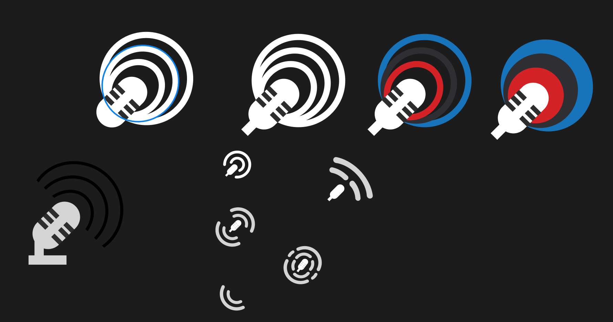
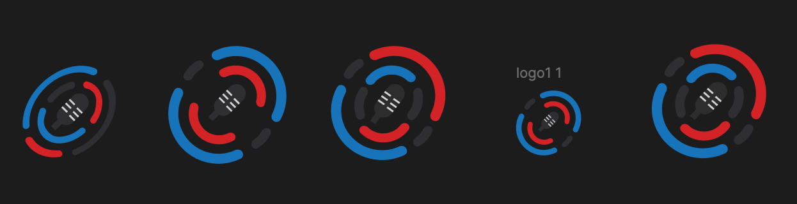

Initially, Network Junction was only meant to deal with audio content: podcasts and newscasts. I played around with the microphone and audio wave motifs.
Network Junction Logo
THE BACKGROUND
Network Junction was a big initiative that included a design overhaul, expansion of features, and release to the wider NPR Network (i.e. local stations across the US). Thus, we rebranded what was previously known as “Podcasters NPR Dashboard” into “Network Junction.”
Network Junction is where both NPR staff and local Stations come together to manage and troubleshoot local station podcasts, newscasts, and story segments sent to NPR platforms for NPR Network-wide distribution. You can read about this case study here. It is meant to be a place for collaboration between NPR and Stations and between Stations, the junction of the NPR Network.
THE METHODOLOGY & TOOLS
Figma
Initial Concepts

